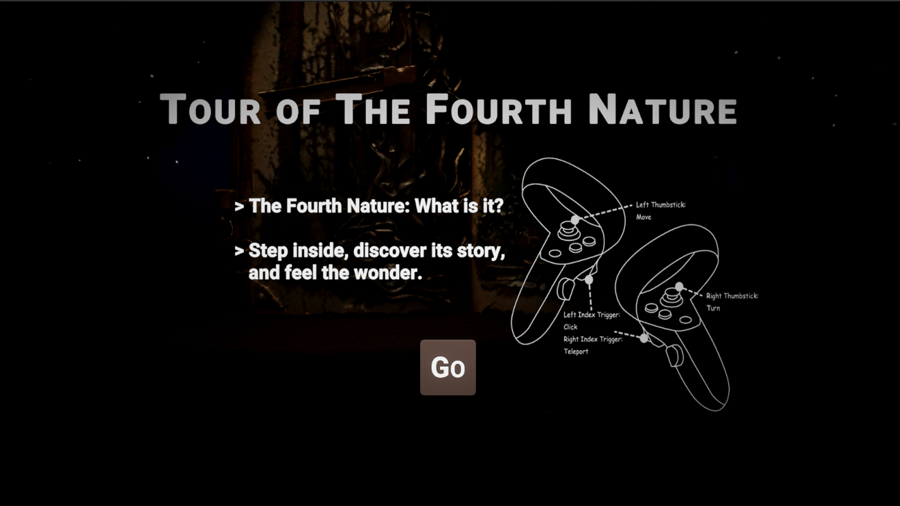
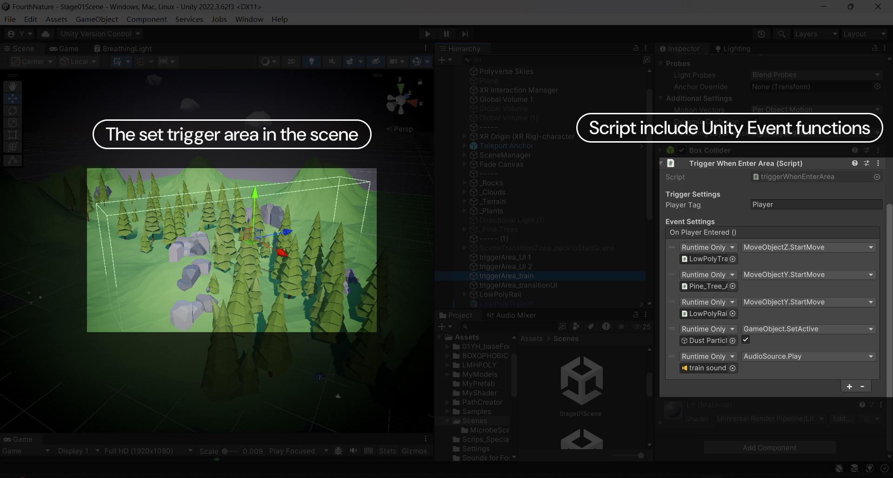
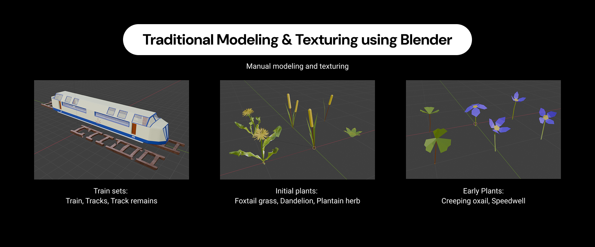

“Fourth Nature” names the wild, self-organising ecology that grows on post-industrial land — a concept too abstract for a museum placard. This master's research answers that with a virtual reality experience rather than a poster: built in Unity URP for the Meta Quest 3, it lets a participant walk an insect-scale path from a pine forest, through the construction and passage of a railway, into the same place years later — now reclaimed by pioneer plants. The piece is as much a method as a story: it applies a 5W1H design strategy, an AI-assisted production pipeline in which AI drafts and the designer holds the gate, and an ethics-aware user-testing loop, to prove that VR can turn an interdisciplinary ecological concept into something a stranger can feel.
00Executive Summary
What this project is, and why it worksThe Fourth Nature Tour is an individual master's thesis project that designs and develops a VR experience communicating the “Fourth Nature” concept — the novel, spontaneous ecosystem that emerges where human industry withdraws. Rather than describing the idea, the experience stages it as a journey: an open book opens the narrative, lighting cues lead the participant to a portal, and two sequential stages contrast industrial invasion with ecological succession. The research contribution is a reusable workflow — concept deconstruction → 5W1H design strategy → narrative + scene + interaction prototype → AI-assisted production → user-test iteration — validated end to end on a working Quest 3 build.
- It treats the problem as one of communication, not data. The value of Fourth Nature lies in public accessibility; the project translates an abstract ecological principle into a tangible, explorable narrative so people can co-perceive urban ecological regeneration rather than read about it.
- The method is explicit and reusable. A 5W1H framework (Lasswell, extended) is scenario-translated into a design strategy covering content, purpose, audience, scenario, carrier and method — a transferable template for other interdisciplinary ecological concepts.
- Technology serves the concept. Unity URP + Meta Quest 3 deliver immersive presence; C# scripts, Unity Events and Shader Graph build a controllable, dynamic interaction system; low-poly assets balance performance, legibility and iteration speed on standalone VR hardware.
- AI is a gated pipeline, not a gimmick. AI-assisted storyboarding, experimental 3D modelling, sound generation and pair-programming (Cursor, GitHub Copilot) each compress a production stage — but every output passes a human gate, and the durable artefact is a reusable prompt contract (role / requirements / output + references) rather than any single generated asset.
| Format | Virtual reality experience — Meta Quest 3 headset, Unity URP, standalone build |
| Year | 2025.09 – 2026.06 |
| Context | Master's thesis graduation project (individual) |
| My roles | Conceptual research · Narrative & interaction design · Unity / C# development · AI-assisted production · User testing & iteration |
| Design framework | 5W1H strategy (Lasswell) → user journey & storyboard → VR prototype |
| Deliverables | Concept research · 5W1H design strategy · storyboard · three low-poly VR scenes (Initial + Stage 1 + Stage 2) · C# interaction system · Shader Graph effects · AI-assisted asset & sound pipeline · reusable prompt contract & human verification gates · ethics-aware user-test iteration |
01Background Research
Discipline: ecological concept research & VR medium analysisThe research begins by grounding the concept and interrogating the medium. “Fourth Nature” denotes anthropogenic, self-wilding urban land — high in ecological potential yet hard to perceive. Virtual reality is chosen as the carrier for two reasons: its immersive 3D environment (reality-substituting + reality-transcending) lets participants inhabit a world beyond physical constraints, and its embodied, multimodal interaction turns a spectator into an actor. A comparative case analysis — Musée d'Orsay's La Palette de Van Gogh (linear, anthropocentric reconstruction) versus Marshmallow Laser Feast's In the Eyes of the Animal (exploratory, non-anthropocentric perception) — distils two strategies the project deliberately fuses: narrative guidance for clarity, and perspective-shift for curiosity.
Communication value of Fourth Nature
Translating abstract ecological principles into tangible experiences improves public accessibility and acceptance, letting people co-create with urban nature rather than merely learn about it.
VR as a medium for ecology
Full-sensory immersion and spatial presence make VR a distinctive platform for presenting natural concepts — including the shift to non-human, insect-scale viewpoints that build empathy.
Two transferable strategies
Case analysis shows narrative guidance improves information delivery, while perspective-shifting stimulates exploration — the project combines both for guided-yet-open ecological discovery.
The brief the research produced: how might we use virtual reality to make the abstract Fourth Nature concept perceptible and experiential — breaking the constraints of time and space so participants perceive ecological value and evolutionary process, and strengthen environmental awareness? That question turns theory into a buildable VR narrative.

02Design Methodology
Discipline: 5W1H design strategy & user journeyThe 5W1H framework (Lasswell's communication model, extended with “How”) is scenario-translated into a concrete design strategy. What — dynamic process visualisation and comparative change of ecological regeneration. Why — perceive ecological value beyond time/space constraints. Who — general public & student science-education groups. When — museum-like exhibition spaces and online platforms. Where — VR headsets, immersive halls, dynamic video. How — 3D modelling, interaction & mechanical design, conceptual visualisation, and AI-assisted design, closing the narrative–scene–interaction loop.
5W1H → design strategy
A reusable, practice-derived strategy mapping each dimension to a VR design decision — content presentation as dynamic-process + change-comparison, delivered through museum exhibitions and online media for public ecological communication.
The book metaphor & teleportation loop
An open book is the narrative anchor; lighting cues guide the participant to portals. The Initial Scene cycles back to bridge Stage 1 and Stage 2, lowering cognitive load and keeping narrative continuity across the experience.


03Technical Development
Discipline: Unity URP engineering & interaction systemThe prototype is built on the Unity Universal Render Pipeline (URP) for its XR rendering features and post-processing headroom, deployed to the Meta Quest 3 (high-resolution dual LCD, standalone, widely accessible). XR Plug-in Management and the XR Interaction Toolkit form the development foundation; the headset connects via Meta Quest Link for in-design testing. Interaction logic is implemented in C#: custom scripts detect participant position and interaction points in real time, while Unity Events expose a visual editor that wires script functions to UI buttons and spatial triggers without code changes — sharply raising iteration speed.
Initial Scene → Stage 1 → Stage 2
A linear, story-driven progression anchored by a hub. Stage 1 stages industrial intervention (pine forest → logging → railway construction → train passage); Stage 2 stages spontaneous succession on the abandoned railway — forming the Fourth Nature node before a closing fade-out.
Shader Graph & dynamic materials
A vertex-animation shader drives a “move with wind” plant-growth effect; a portal shader dissolves and reassembles the screen during teleportation, smoothing scene changes. These materials are linked to C# logic to enrich interaction feedback.


04AI × Design × Engineering
One integrated method — AI drafts, the designer directs, a human gate decides what shipsListing AI tools undersells what is actually happening here. AI runs through the pipeline as a draft-and-verify loop: at each stage a model produces a first-pass artefact, the designer sets the intent and accepts or reworks it, and nothing enters the build until it clears a human check. The durable output is not any single generated image or mesh — it is the reusable prompt contract (role / requirements / output, written in Markdown and paired with one content reference and one style reference) that makes each stage repeatable and portable across models.
| Stage | What AI produces | What the designer owns (the gate) | Result |
|---|---|---|---|
| Storyboard | Polished concept frames generated from a rough content sketch plus a style reference | Writes the role / requirements / output contract, selects the two references, and rejects frames that drift from the narrative | Higher-quality concept frames produced faster — at the stage where changes are cheapest |
| 3D assets | Text → concept image → textured 3D mesh | Reworks topology, scale and material in Blender, and decides which narrative-critical pieces must stay hand-built | >50% modelling time saved, plus a wider space of conceptual forms to explore |
| Sound | Preliminary SFX from an AI audio platform | Edits, layers and places every cue against its narrative node | A sound track that existed early enough to be tested, then completed per node in iteration |
| Code | Syntax checking and logic-optimisation suggestions | Owns the interaction architecture, C# logic, Unity Events wiring and shader parameters | Faster debugging while the designer keeps full control of system behaviour |
The same gate logic decides where an asset comes from. Not everything should be generated: narrative-critical elements stay hand-built, because their shape carries the argument; conceptual or exploratory elements go to AI, because breadth of options matters more than precision there; generic fill comes from curated libraries, because it should cost almost nothing. That routing rule — not any single tool — is the reusable part of the method.
Hand-built low-poly
Narrative-critical pieces are modelled in Blender with bespoke materials — chosen where precise shape, style and detail control decide whether the story reads.
AI-assisted experimental modelling
Text-to-image → textured 3D → Blender refinement. Used where breadth beats precision: abstract, conceptual forms explored far faster than by hand (>50% time saved).
Curated Asset Store libraries
Generic environment fill (pine, grass, stone) is sourced, not made — enriching spatial hierarchy without spending concept budget or diluting the idea.
AI-generated audio & pair programming
OptimizerAI produces preliminary SFX, refined in an audio editor; Cursor and GitHub Copilot assist debugging and logic optimisation — compressing the sound and development tracks alike.


Every AI-assisted asset was reviewed and reworked in Blender before entering the build, and the elements that carry the concept argument were deliberately hand-built so the narrative never rests on a generation the designer cannot control. AI use is documented stage by stage in the thesis rather than presented as authorship — the pipeline stays transparent about which parts were generated and which were made.
This was built with single-turn, prompt-driven assistants — Cursor and GitHub Copilot for code, OptimizerAI for sound, text-to-3D for assets. The contract it formalised (role, requirements, output format, plus references) is exactly the interface today's agentic, tool-using models consume, so the same four stages can now be delegated as multi-step jobs instead of one prompt at a time. That shifts where the designer's leverage sits: from operating each tool to specifying intent and verifying output, which makes the gate — not the generation — the skill that compounds. It also makes the cheap stages cheaper still: storyboard and asset variants, automated topology cleanup, shader scaffolding, playtest-transcript synthesis, and keeping bilingual documentation in sync are all realistic to hand over.
What does not move is the finding this thesis actually earned. Compressing production is not the same as validating a concept: faster assets did not make the guidance clearer — eight participants in a headset did. Any agent-driven version of this pipeline still has to end in human testing, or it will simply ship a more polished version of a confusing experience.
05Prototype, Evaluation & Results
Ethics-aware testing, and what the evidence actually showsTesting followed human-centric ethical principles across three dimensions — participant health (safe space, cybersickness pre-check, <10 min headset / <30 min total per session), experience authenticity (delayed, non-intrusive feedback; informed disclosure without leaking evaluation points), and privacy (informed consent on data use). Eight participants took part in qualitative usability testing at ~70% scene / 80% interaction / 10% audio completion, with three returning for follow-up; observation records plus semi-structured interviews fed a documented iteration cycle.
Qualitative, non-intrusive testing
Participants freely explored without a task list; behaviours and sticking points were recorded synchronously, then discussed in one-on-one semi-structured interviews — prioritising problem identification and design improvement.
Four response directions
Feedback clustered into guidance clarity, path fluency, animation timing and sound layering. Iterations added interactive UI + ambient-light state changes, laid main paths with hidden boundary blocks, enriched transition shaders, and completed per-node sound.
Core concept communication succeeded, but guidance ambiguity and abrupt transitions hurt fluency. The fix — stronger in-scene UI guidance, restricted explorable ranges, smoother fade transitions and richer sound — validates the project's own conclusion: for abstract concepts, clear information design and fluent interaction logic matter far more than technical complexity.
| Research question | Design decision | Technical implementation | What the test showed |
|---|---|---|---|
| Can an abstract ecological concept be made perceptible? | Stage the concept as a journey that contrasts industrial invasion with ecological succession | Initial → Stage 1 → Stage 2 hub architecture with portal-shader transitions | Yes — core concept communication succeeded; the Fourth Nature idea landed with participants |
| Does narrative guidance help, or does it constrain exploration? | Book metaphor, light cues and a hub that loops back | C# triggers wired through Unity Events to UI and lighting | Guidance was necessary but ambiguous in places — resolved by in-scene UI and ambient-light state changes |
| Do AI-assisted assets survive a real VR build? | Route by narrative criticality — hand-build, generate, or source | Blender refinement → low-poly assets in Unity URP on Quest 3 | AI-assisted assets shipped into the tested Quest 3 build, with >50% modelling time saved |
| Is the experience safe and ethical enough to test? | Ethics-first protocol across health, authenticity and privacy | Cybersickness pre-check; <10 min in headset / <30 min per session | The protocol held — 8 participants completed the session and 3 chose to return for follow-up |
| Feedback theme | Fix shipped | Intended effect |
|---|---|---|
| Guidance clarity | Interactive UI plus ambient-light state changes | Direction becomes explicit inside the scene instead of having to be inferred |
| Path fluency | Main paths laid out with hidden boundary blocks | Exploration stays open but bounded, so participants stop losing the thread |
| Animation timing | Richer transition shaders on teleportation | Scene changes stop reading as abrupt cuts |
| Sound layering | Per-node sound completed | Audio carries continuity across nodes instead of thin, single-layer cues |

06Delivery, Reflection & Next
Research contribution — what is verified, what is still open, where it goes nextThe MVP verifies that VR can carry an abstract ecological concept, and leaves behind a reusable reference framework: concept-transformation design strategy + closed-loop workflow + scene-asset construction + testing-iteration process. Three contributions stand out — a visualisation workflow for interdisciplinary ecological concepts; an end-to-end AI-integration system (storyboard, 3D asset, sound, programming) built on a reusable prompt contract with human verification gates; and a dual framework of simulating human impact while implying non-human perspectives.
| Verified | Still open |
|---|---|
| VR can make an abstract ecological concept perceptible — the Fourth Nature idea landed with participants. | No quantitative comprehension baseline: the result is qualitative, with no pre/post measure to compare against. |
| The five-stage workflow is executable end to end — it produced a running Quest 3 build. | Only one site narrative (a railway) was built and tested; transfer to other post-industrial sites is unproven. |
| AI assistance compresses production without breaking the build — >50% modelling time saved. | That saving is the designer's own estimate, not a measured comparison against a matched manual build. |
| For abstract concepts, clarity of guidance and fluency of interaction beat technical complexity. | Audio was only ~10% complete at test time, so the sound layer's contribution is not yet evidenced. |
| An ethics-first protocol is practical — 8 participants tested, 3 returned for follow-up. | AI-assisted asset quality was judged by the designer, not independently by participants. |
- Reusable workflow. A modular pipeline other ecological concepts can adopt or adapt, lowering the threshold for VR transformation of abstract ideas.
- AI + traditional design. AI is embedded at every stage — storyboard, modelling, sound, code — as a drafting partner behind a human gate, with a reusable prompt contract rather than one-off prompts.
- Concept over complexity. User feedback confirmed clarity of guidance and fluency of interaction outperform technical sophistication in communicating abstract ideas.
- Open expansion. Functional modules (species identification, parameter-adjustable ecosystems), more carriers (urban ruins, abandoned mines), and deeper AI + VR for real-time dynamic ecological scenes remain as concrete next steps.